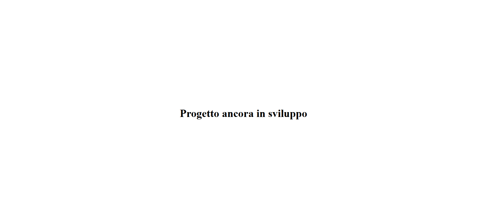

Descrizione
Nonostante il mio percorso formativo fosse orientato verso altri ambiti, nel 2020, con l'arrivo della pandemia, ho colto l'opportunità di entrare nel mondo dell'informatica, anche se questo significava ripartire da zero. Giorno dopo giorno ho colmato le mie lacune con curiosità e impegno, alimentando un processo di apprendimento continuo che ancora oggi sostiene la mia voglia di crescere e migliorare. Inizialmente mi sono occupato di attività di software testing, per poi passare alla gestione di piattaforme API Gateway basate prima su WSO2 API Manager e successivamente su GovWay, approfondendo concetti legati alla sicurezza delle API come: OAuth2, Single Sign-On e la gestione di token e autorizzazioni.
Parallelamente, ho intrapreso un percorso di studio autonomo sulle basi della programmazione, approfondendo in particolare il linguaggio JavaScript, scelto come punto di partenza per avvicinarmi allo sviluppo full-stack; generalmente utilizzo Angular per lo sviluppo front-end e Node.js come runtime per la parte back-end. Utilizzo strumenti di Intelligenza Artificiale come supporto allo studio, alla sperimentazione e all'approfondimento di nuove tecnologie; questo mi ha permesso di accelerare l'apprendimento e ampliare le mie competenze, realizzando anche applicazioni Android in Kotlin. Il mio obiettivo è continuare a crescere come sviluppatore full-stack, consolidando le competenze già acquisite e affrontando progetti sempre più complessi.
In questo portfolio ho raccolto alcuni dei progetti realizzati a scopo didattico, pensati per mettere in pratica quanto appreso e per mostrare concretamente il mio percorso di crescita.
I Miei Progetti

Progettata per garantire organizzazione, tracciabilità e gestione efficiente del tempo, prevede una funzione per la ricezione di notifiche windows, dal suono personalizzato.
I profili sono stati pensati per creare una distinzione netta, che può essere tra persone fisiche o anche tra tipologie di attività (lavorative, personali, ecc); inoltre, all'interno di ogni profilo sono presenti le categorie, completamente personalizzabili, che offrono un livello aggiuntivo di suddivisione dei task.
Avatar e suono delle notifiche sono anch'esse personalizzabili, seguendo le indicazioni presenti nelle FAQ all'interno dell'applicazione.


Tecnologie di sviluppo utilizzate:
- HTML: struttura delle pagine web;
- CSS: styling e design responsive;
- JavaScript / TypeScript: linguaggi di sviluppo full-stack;
- Angular 21: framework per la realizzazione di Single Page Application (SPA);
- Node.js + Express: gestione delle richieste HTTP e sviluppo di API lato Server;
- SQLite: database relazionale embedded
- Tauri: distribuzione dell'applicazione e gestione notifiche;

Ogni post può ricevere like o commenti, ma viene eliminato dopo 24h, diminuendo la pressione sociale, la paura del giudizio e la costruzione del personaggio.
Al fine di personalizzare la visualizzazione e ridurre il numero dei contenuti, è prevista una funzione di filtraggio per: - lingua/nazionalità; - categorie come "sport", "politica", ecc; - tematiche del momento.
Il tema verde e bianco è ispirato ai colori irlandesi, da sempre considerata una popolazione con grande senso di comunità e condivisione.
Tecnologie di sviluppo utilizzate:
- HTML: struttura delle pagine web;
- CSS: styling e design responsive;
- JavaScript / TypeScript: linguaggi di sviluppo full-stack;
- Angular 21: framework per la realizzazione di Single Page Application (SPA);
- Node.js + Express: gestione delle richieste HTTP e sviluppo di API lato Server;
- PostgreSQL: database relazionale;
- Docker: containerizzazione dell'ambiente applicativo (frontend, backend e database) per garantire portabilità, semplicità di avvio e riproducibilità del progetto.

Tecnologie di sviluppo utilizzate:
- HTML: struttura delle pagine;
- CSS: styling e design responsive;
- JavaScript / TypeScript: linguaggi di sviluppo frontend;
- Angular 21: framework per la realizzazione di Single Page Application (SPA);
- Kotlin: linguaggio di sviluppo per applicazioni Android native;
- NanoHTTPD: server HTTP embedded per applicazioni Android;
- SQLite: database relazionale embedded